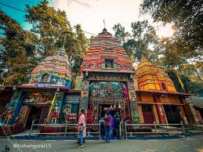
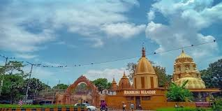

Rankini Temple


Rankini Temple
Rankini Mandir, also known as Kapadgadi Ghat Rankini Mandir is a temple situated in Rohinibera village of Bansila Gram Panchayat in Potka block, near Jadugora, Jamshedpur in Jharkhand in India.[1] It is located near the Hata-Jadugora State Highway. The stone that is the murthi is believed to be a physical incarnation of Goddess Rankini. It is widely believed that during ancient times, people travelling through the dense forest used to worship at the Rankini Devi temple for their protection and well being
History
It is said about Maa Rankini temple that Goddess Rankini is seated in a stone and is still awake today. Rankini Temple was established during 1947-50, at present, the place where the mother is worshipped has been established. Mata Rankini used to reside in the Kapadgadi valley situated next to the drain passing below the main temple. Mother was in the form of a stone in a bond. It is said that Goddess Rankini came in a dream to a person named Dinbandhu Singh and told about herself being in the form of a stone. The Goddess also told in his dream that she needs worship and he would worship her. From that day onwards, Dinbandhu Singh started worshipping in that rock with vermilion and a colored cloth. A few years after that, the mother gave a divine dream to Dinbandhu and asked him to establish a place where the general public could also reach and worship Mata Rankini.
Goddess in the form of Sheela
Following the orders of the mother, Dinbandhu established a Sheela (stone) as the murthi (idol) of the Goddess where temple of Maa Rankini is located. After Dinbandhu, his son ManSingh and after ManSingh, his son Baidyanath Singh, with his family and the trust they created are running the temple. It is said that the size of the stone which is worshipped as Mother is increasing year after year. This stone is called a living stone. People tell this to the glory of the mother and the proof of her divine presence.
Story
Goddess Rankini used to live in the forests in the Kapadgadi Valley. One day a shepherd, seeing a girl walking alone in the forest, started asking about her. But the girl did not answer. To escape from the shepherd, she reached Kapadgadi Ghat, where a washer-man was washing clothes. She went inside his cloth bag and hid. After a while, when the shepherd could not find the girl, he returned to the forest. In the meantime, the pile of clothes in which the Goddess was hiding had turned into stone
Temple
The Goddess worshipped in the temple is believed to be a physical incarnation of Goddess Kali. The ancient temple is said to have formerly existed on a rock. According to the legends, the temple had witnessed the human sacrifices (narabali) in the past, until about 1865, when this was eventually stopped by the British. The belief amongst the tribes was that the Goddess herself killed the victims. The stone deity was originally worshipped by the local Bhumij tribes. Later, through the passage of time this worship transformed into worship of the Hindu Goddess Durga, probably when the Kings of Dhalbhumgarh took over. Dhalbhum was first written about when the British Army attacked the Dhalbhum and Ghatsila region in 1767 jointly with Raja of Midnapore, after a previous abortive attempt in 1765.[8] The famous Bengali writer Bibhutibhushan Bandyopadhyay (1894-1950) has mentioned Rankini Devi in his Bengali story named "Rankini Debir Khadga
The current temple that stands is about 70 years old, built around 1950. The trust managing the temple was formed in 1954. The main temple is flanked by a temple dedicated to Lord Ganesha and a temple dedicated to Lord Shiva, on each side.
There is a Hari Mandir recently[when?] constructed near the Rankini temple dedicated to Radha-Gobind.
Tradition
During the early days the priests were from the tribal Bhumij community. Since then the priests of the Bhumij community worship in the temple. Goddess Rankini is held in high esteem and worshipped by both tribal and non tribal people inhabiting the district.
Location
Located on the Hata-Jadugora state highway, the temple is in the Rohinibera village of Bansila Gram Panchayat in Potka block. It is about 3 km from Jadugoda and 35 km away from Tatanagar Railway Station